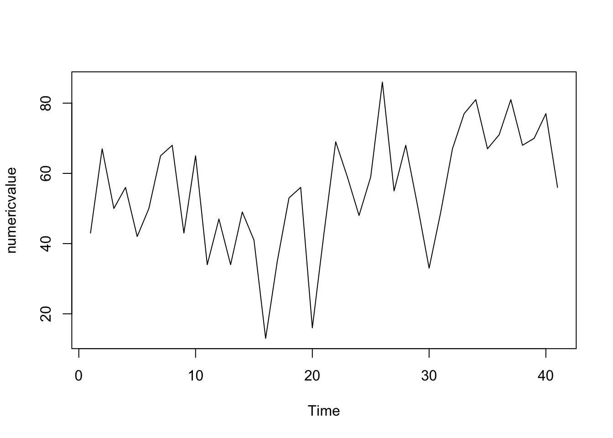
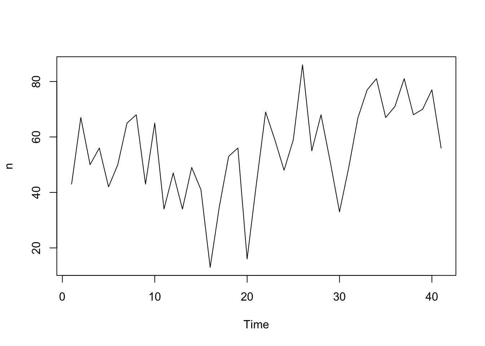
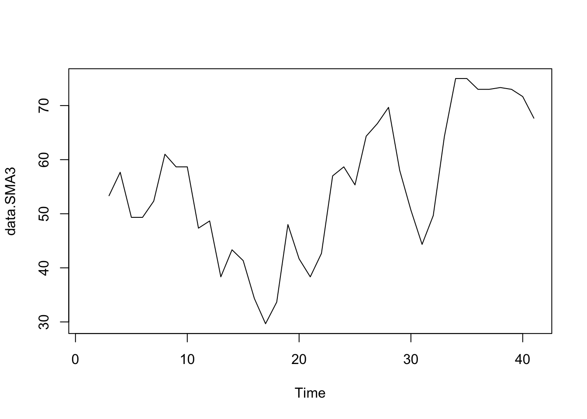
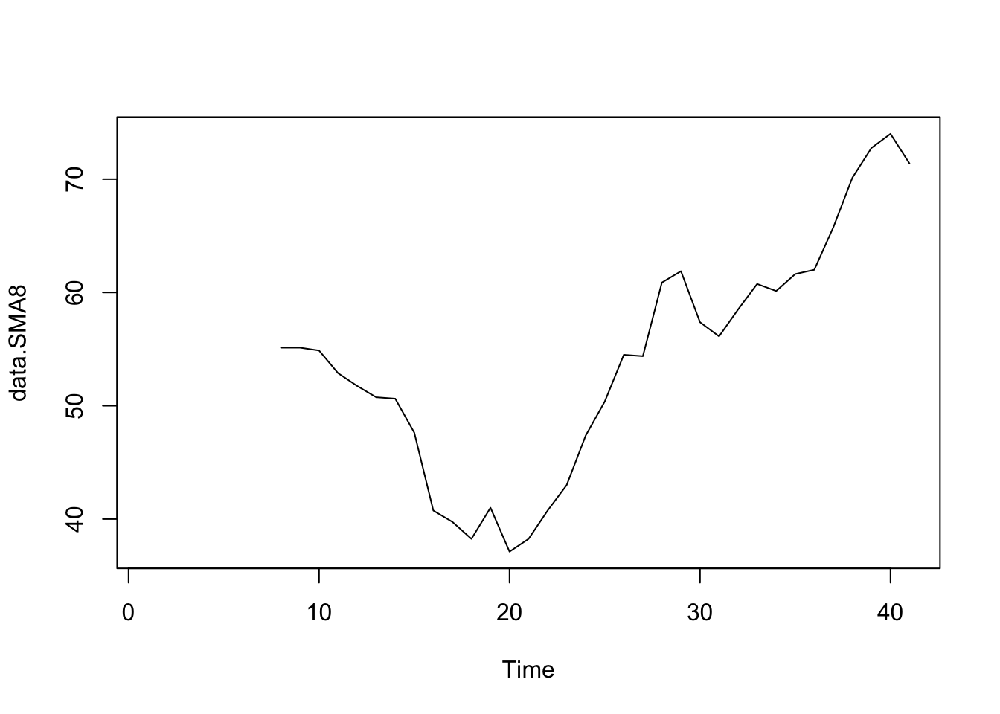
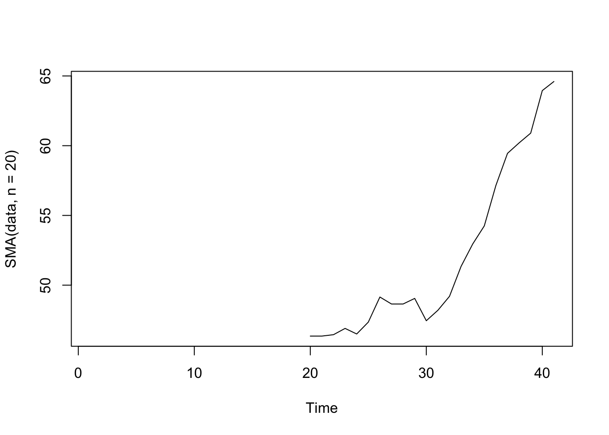
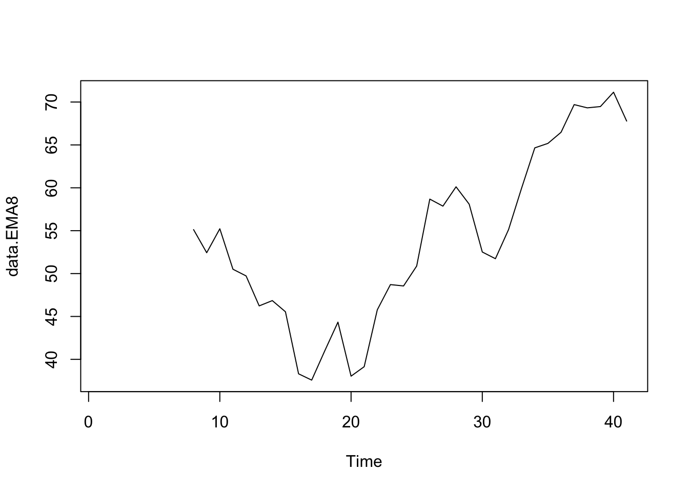
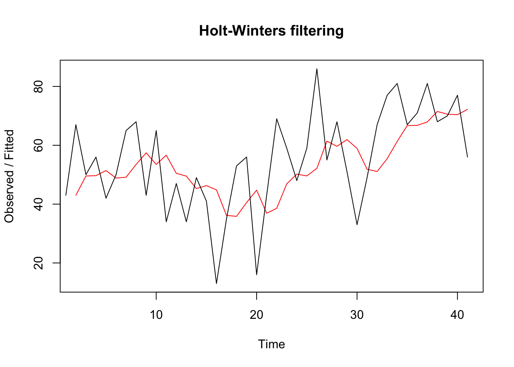

Lecture 15. Time series (and other species)
_
_
_
Why do we need them?
In general data analysis:

Annual diameter of women’s skirts at the hem, from 1866 to 1911 (original data from Hipel and McLeod, 1994, data from LRBTS).
- trends in fashion industry
- prices on fruits and vegetables
- stock prices
and other creatures that have certain inherent variation, tend to form periods (have seasonality) and usually change in time.
We can make forecasts for future times not covered by the original time series.
_
_
_
What about linguistics?
Any ideas?
- time-based corpus data
- longitudinal data

Occurrences of the Russian words и, на, не, а, о
In terms of raw frequencies, we would expect something like:

_
_
_
Corpus data:
- “natural” variance in time
- fluctuation caused by uneven distribution of parts of corpora in time (uneven size)
- fluctuation caused by uneven distribution of genres in time
It is generally ok to group year data in categories, but it is generally not acceptable to use them “as is” in numeric variables.
_
_
_
library(tidyverse)
library(TTR)Smoothing
Simple smoothing average
To estimate the trend component of a non-seasonal time series, it is common to use a smoothing method, such as calculating the simple moving average of the time series. SMA() calculates the arithmetic mean of the series over the past n observations.
data <- read.csv("http://robjhyndman.com/tsdldata/misc/kings.dat",skip=3)
names(data) <- "n"
data <- ts(data)
plot.ts(data)
data.SMA3 <- SMA(data, n=3)
plot.ts(data.SMA3)
data.SMA8 <- SMA(data, n=8)
plot.ts(data.SMA8)
plot.ts(SMA(data, n=20))
Exponential smoothing
EMA (exponential moving average) calculates an exponentially-weighted mean, giving more weight to recent observations.
In HoltWinters() (simple exponential smoothing predictive model) smoothing is controlled by the parameter alpha [0;1]. Values of alpha that are close to 0 mean that little weight is placed on the most recent observations when making forecasts of future values.
Exponential data analysis
With simple exponential
data.EMA8 <- EMA(data, n=8)
plot.ts(data.EMA8)
data.EMA <- HoltWinters(data, beta=FALSE, gamma=FALSE)
data.EMA## Holt-Winters exponential smoothing without trend and without seasonal component.
##
## Call:
## HoltWinters(x = data, beta = FALSE, gamma = FALSE)
##
## Smoothing parameters:
## alpha: 0.2729431
## beta : FALSE
## gamma: FALSE
##
## Coefficients:
## [,1]
## a 67.77587plot(data.EMA)
Other approaches to time series in linguistics
Sampling
To make sampling, we draw random samples of N′ tokens from the data by performing a binomial split for each t (time perios). For each word, this procedure returns binomial (fit, pt) random variates, where pt is the probability of success, which is given as: N′/Nt. The resulting corpora of (approximately) N′ tokens.
Iterative sequential interval estimation (GriesHilpert2010)

3rd person singular present tense -(e)s (Gries & Hilpert 2010)


Iterative sequential interval estimation (GriesHilpert2010)


VNC dendrogram on just because with line plots of observed frequencies and mean frequencies per cluster and scree plot (TIME corpus, Hilpert & Gries 2009)

VNC dendrogram on keep V-ing with line plots of observed frequencies and mean frequencies per cluster and scree plot (TIME corpus, Hilpert & Gries 2009)
Underlying function
Solovyev et al. 2017 calculates a function to extract its value in each datapoint.